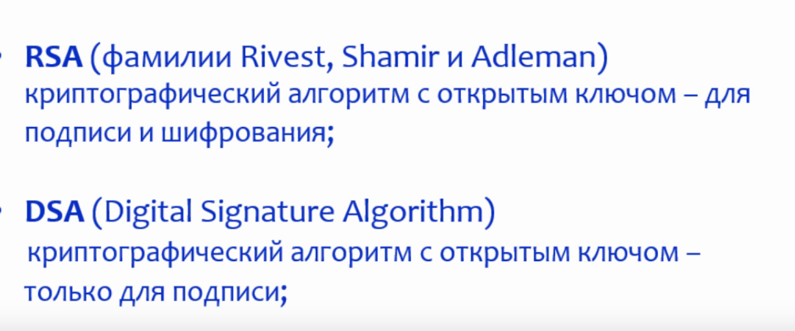
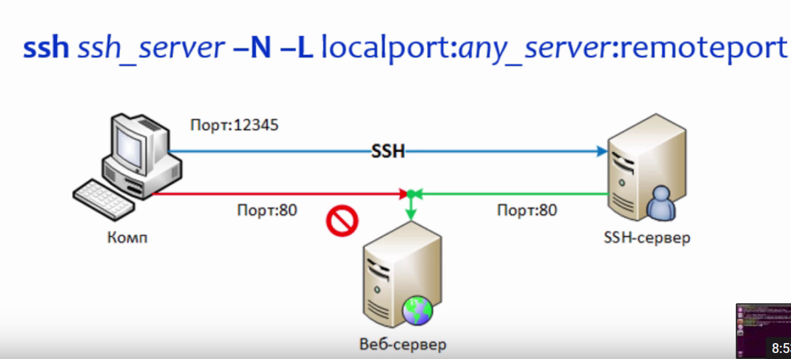

Немного теории

public key - доступен всем
private key - только у владельца
Данные шифруют публичным ключом, но их может прочесть только
владелец частного ключа
Рассмотрим процесс
1. Допустим у нас есть сервер 192.168.0.105 и клиент 192.168.0.104
2. При первом подключении у нас будет сообщение ssh alex@192.168.0.105 то есть нам предлагают скачать публичный ключ ECDSA
The authenticity of host '192.168.0.105 (192.168.0.105)' can't be established.
ECDSA key fingerprint is c4:8b:0f:41:9d:d0:d5:25:ff:f4:65:4e:b5:2c:66:16.
Are you sure you want to continue connecting (yes/no)?
Обратим внимание это c4:8b:0f:41:9d:d0:d5:25:ff:f4:65:4e:b5:2c:66:16. публичный ключ сервера
! Важно чтобы первый прием публичного ключа был доверенный
3. После первого подключения был в папке .ssh был создан фаил known_hosts c содержимым
|1|RtGmlSNcgxXZCgdj1SfqUXNs+/Y=|MIXFiV4y6O7QoctKt7eXSOnyi6Y= ecdsa-sha2-nistp256 AAAAE2VjZHNhLXNoYTItbmlzdHAyNTYAAAAIbmlzdHAyNTYAAABBBKcheLW2fmakLmMaoghIbv6aOK7zW+g5yQYdDKMwafy4EQTf6xpWJJn9cTbpL6Am9M+CzDsIhKRQ9JOEgRJlEJ8=
это и есть публичный ключ сервера к которому подключаемся
4. Далее сколько бы мы не подключались к удаленной машине она будет пускать нас без проблем
5. Удалим фаил rm known_hosts и снова будет выскакивать сообщение из пункта 2
6. Создадим фаил known_hosts на уровне системы и вставим туда ранее известный публичный ключ сервера sudo vim /etc/ssh/ssh_known_hosts после этого можно сразу подключаться к удаленной машине по паролю
----
7. Пока в папке .ssh на локальной машине пусто теперь нужно сгенирировать ключи командой ssh-keygen -t rsa тут мы создадим пару открытого и закрытого ключа
имя ключа id_rsa
парольная фраза (длиннее чем пароль) но не пароль просто фраза которую легче запомнить например localhost - это парольная фраза
после это будет сгенерирован ключи
id_rsa - приватный ключ
id_rsa_pub - публичный ключ
так же создадим dsa ключи - эти ключи удостоверяют меня лучше эти ключи передать надежным способом
8. Отправляем мой ключ на удаленный сервер
ssh-copy-id -i .ssh/id_rsa.pub alex@192.168.0.105
после будет сообщение что ключ перекинут
Now try logging into the machine, with: "ssh 'alex@192.168.0.105'"
and check to make sure that only the key(s) you wanted were added.
Проверим
cat .ssh/id_rsa.pub
ssh alex@192.168.0.105 потом нужно ввести парольную фразу
теперь на удаленной машине cat .ssh/authorized_keys
ключи идентичны
9. Для данной сессии все запомнилось и паролью фразу вводить не нужно
10. Чтобы создать ключи для машины нужно выполнить sudo ssh-keygen -t rsa -f /etc/ssh/ssh_host_rsa_key
после этого будут созданы ключи для нашей машины на уровне хоста
11. На удаленной машине в /etc/ssh содержиться множетво ключей так как там развернут openSSH
Криптография

Тунели SSH
